Checkpoint mới do user giao: Q7C · Character & Enemy Art · ACCEPTED — USER PLAYTEST APPROVAL. Q7D = Full Run Polish chưa mở; approval Q7A/Q7B giữ nguyên.
Q7B · HUD & Combat Readability
ACCEPTED — USER PLAYTEST APPROVAL · User “q7b đã đạt” trên5ee970e, Pages40292060536 SUCCESS · Sửa theo playtest: HUD/control lanes ngoài canvas, frame bevel/góc gãy theoảnhuser,2cặp4attack+Dash+Surge icon-only,auto aim và draft1s. Balance/effects/sàn Q7A giữ nguyên; Q7B đã được user chấp nhận.
Giữ HUD/controls nền tảng, rút prose trên sân thành grouping và icon có trạng thái. Dữ liệu readiness/cooldown lấy đúng state game; Charged dùng đạn + điểm, không tự hồi theo thời gian.
Audit, giới hạn, file dự kiến · Design Contract + acceptance scenarios · Prompts/inputs · Provenance
Lịch sử vòngf9d7930 và concept trước correction frame/icon-only
Các câu “hiện hành” bên dưới là trạng thái tại checkpoint đó; HUD_V3.md và ảnh ởtrên supersede các mô tả geometry/button labels cũ, không viết lại evidence.
Hiện hành · sửa HUD che nhân vật ở góc
Scope/checks/cách thử mới · Raw checks. Baseline8a469c0 và bản sửa đều là renderer thật; fixture fullbuild/HP22/Barrier30/position, không natural run.
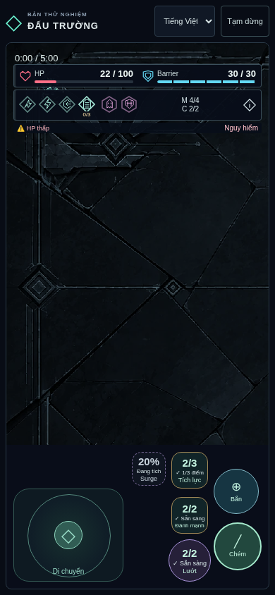
TRƯỚC · góc trên trái, nhân vật bị card che.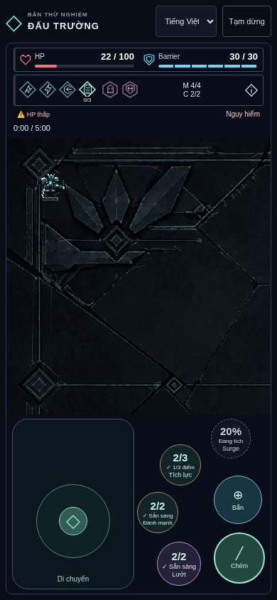
SAU · HUD/control lanes ngoài renderer, floating pad lớn và6nút theo cung.Desktop cùng lỗi góc: trước–sau
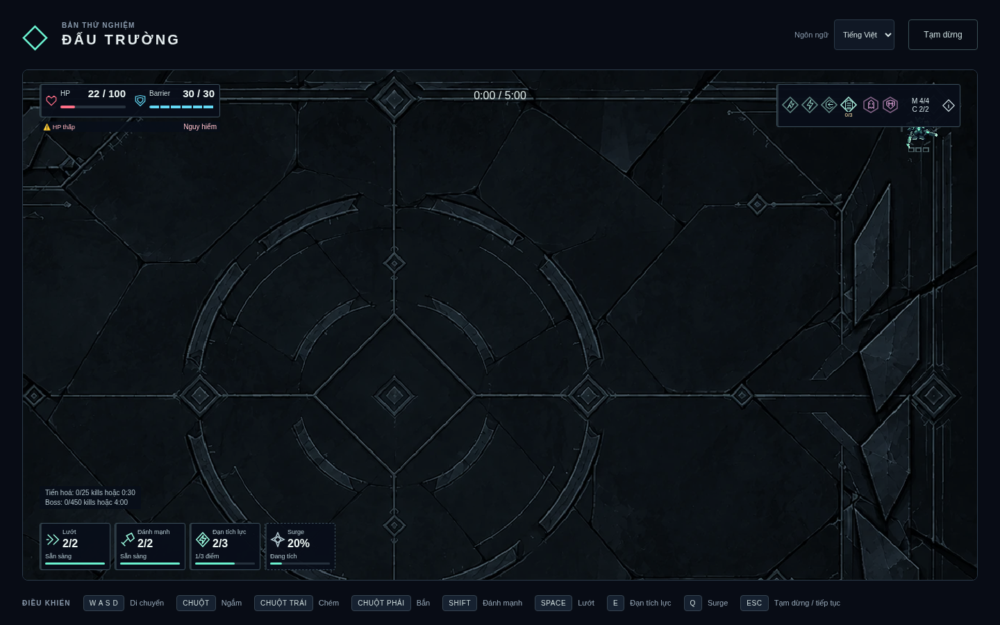
Trước:build summary đè góc arena.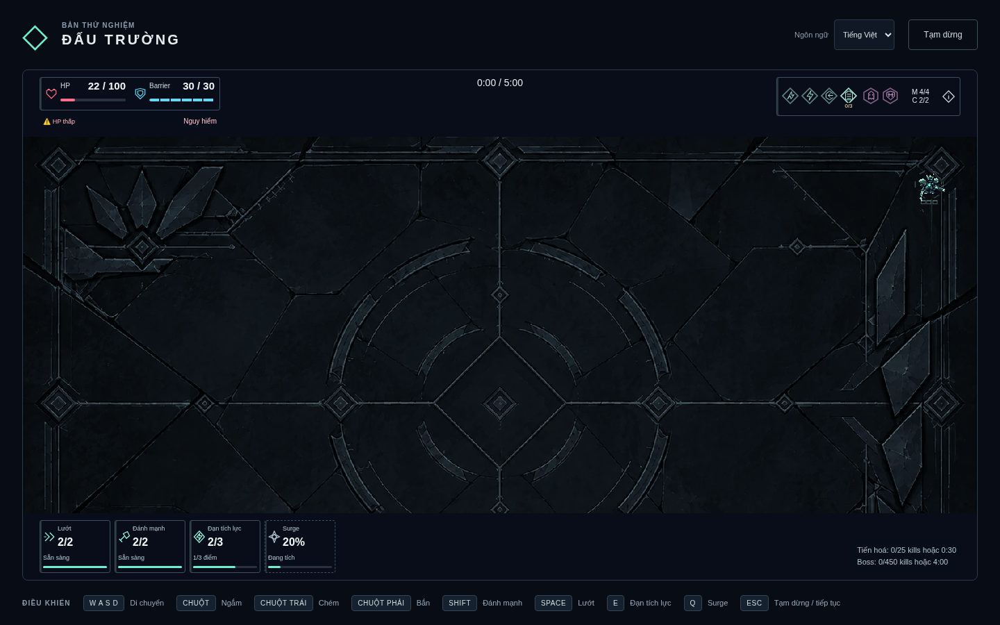
Sau:player nằm trongcanvas,HUD ởlane riêng.Combat fullbuild390.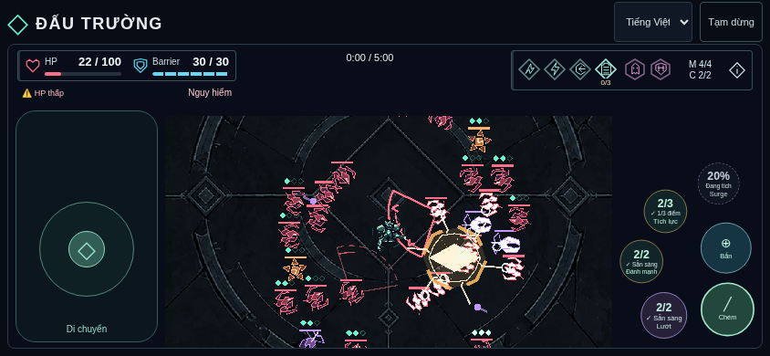
Landscape844,controls hai bên ngoài canvas.
Boss390 · Góc dưới phải · 320px · Tablet768 · Draft đang khóa · Draft sẵn sàng
Lịch sử concept và implementation6664ee0 trước phản hồi controls/occlusion
Các câu “không đổi canvas/hit areas/6nút” bên dưới là snapshot cũ; ngoại lệ mới theo user xem REVISION.md. Evidence/concept giữ nguyên, không sửa lịch sử thành thiết kế mới.
01 · Desktop concept V1
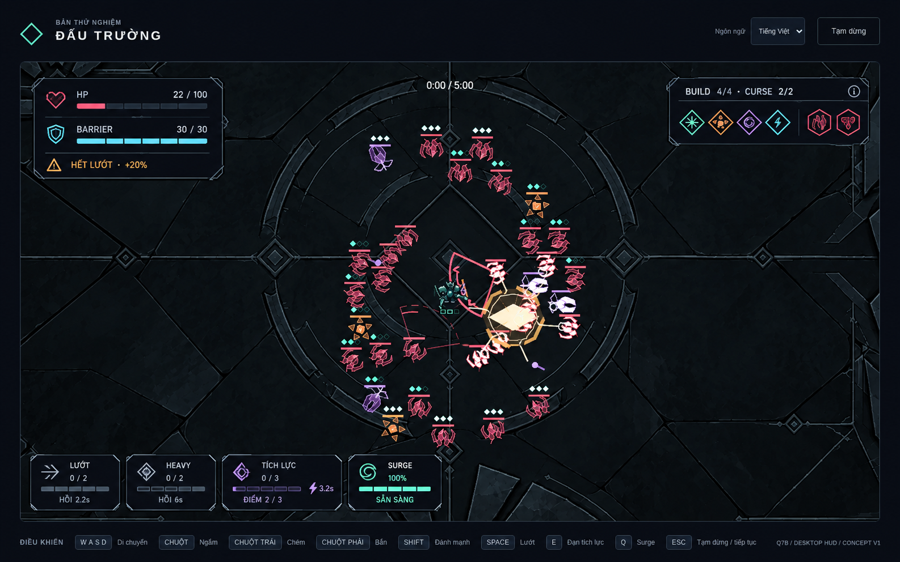
ĐỀ XUẤT: HP/Barrier riêng,4Mutation+2Curse,4resource cards. ImageGen làm HP có khấc; contract yêu cầu HP liên tục. Không thay actor/camera/floor theo sai lệch ảnh.
02 · Portrait V2 cạnh baseline thật
HIỆN TẠI · renderer thật, fixture4Mutation/2Curse/33enemy; không natural run. HUD box cao198.5px ởphone390.
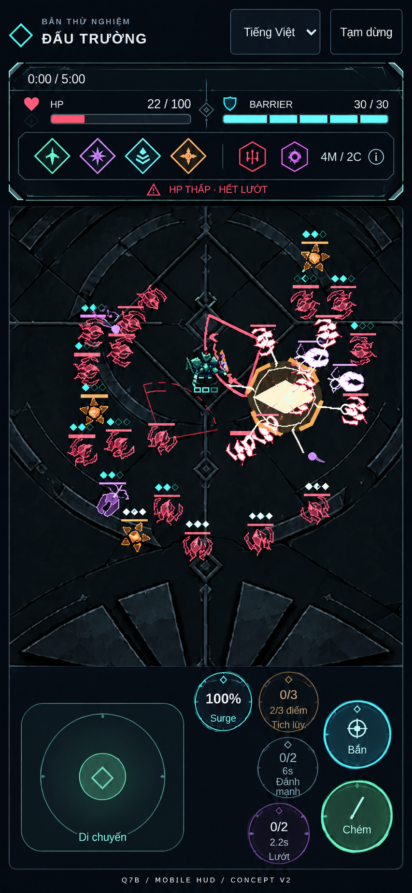
CONCEPT V2 · nhóm vitals/build/risk, tài nguyên trên6nút hiện có. Target≤128px topHUD chưa là số đo implementation. Contract giữ nguyên vị trí/size/capture/giữ-thả của controls.
03 · Crowd và feedback
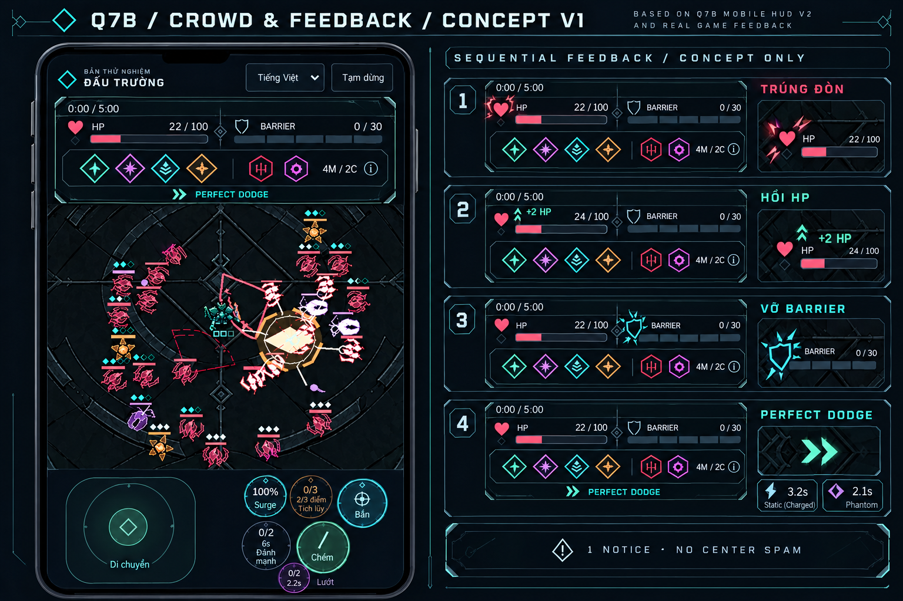
Một notice, proc gắn icon/card. Các panel bên phải là thời điểm khác nhau. Phone inset bị ImageGen xê dịch nút: chỉ duyệt feedback language; layout controls theo code hiện hành/contract và portrait V2.
04 · Before/after — minh họa hierarchy
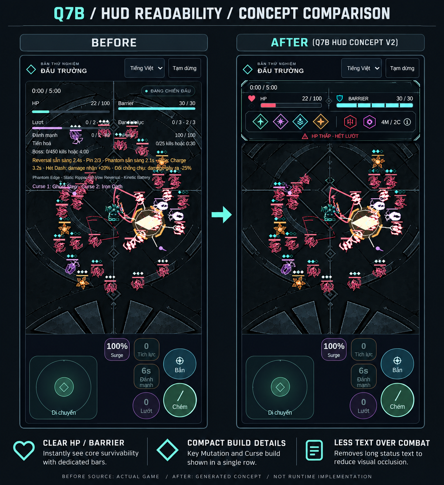
CẢ SHEET ĐƯỢC SINH BẰNG IMAGEGEN, kể cả BEFORE có thể bị vẽ lại. Baseline PNG nguyên gốc ở mục02 là nguồn thật. Không gọi đây là screenshot HUD mới hoặc chứng minh runtime readability.
Baseline320, landscape844, feedback hiện có
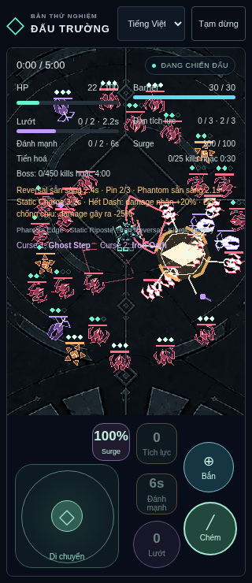
320: HUD213.5px/466pxcanvas, không document overflow nhưng prose vẫn cạnh tranh combat.
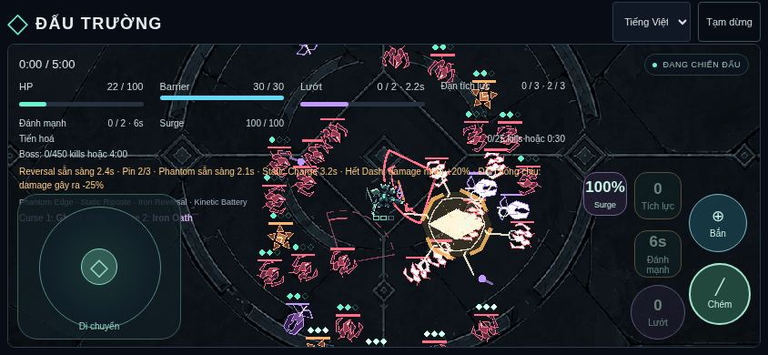
Landscape844×390: HUD157.5px/332pxcanvas. Chưa có implementation mới để báo layout PASS.
Concept đã duyệt / scope playtest runtime
- HP/Barrier tách icon/thanh/số; grouping và mức decoration panel.
- Build4M/2C gọn; tap một summary≥44px mở details qua pause, không auto-cast khi nhả.
- Resource readiness bằng count/fill/timer/label; Charged ammo+points; không đổi6nút.
- Damage/heal/break/Perfect và synergy có feedback ngắn trên HUD/icon, không prose/center spam.
Các hình concept ở trên giữ làm lịch sử, không là runtime assets. Bản HUD đã có checks/evidence tại đầu trang; user cần thử readability và độ mượt trên thiết bị thật. Q2–Q7A giữ accepted,Q1 riêng chưa duyệt; không mở Q7C.